第二章: 导数
实际问题中人们经常会考虑某个函数的极值, 函数的切线方向是分析函数极值的有力工具: - 切线斜率为正时函数单调递增 - 切线斜率为负时函数单调递减 - 切线斜率为零时函数取到极值
那么怎么求函数在某处切线的斜率呢? 这个问题困扰了数学家好多年, 直到后来有人发现切线斜率可以看作是一个极限, 这个极限就叫做导数.
导数是一种通过极限定义的运算, 由此可见极限的重要性, 在后面的章节中, 我们还将从极限出发引出积分的概念. 本课程各部分内容之间的关系如图.
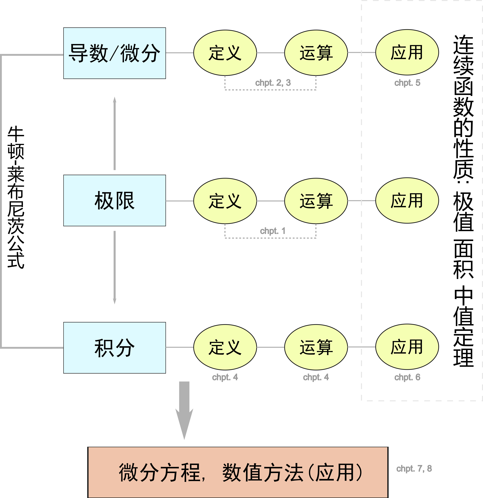
2.1 导数和导函数
导数是函数某处的切线斜率, 是研究函数性质的重要工具.
问题: 求使得函数 \displaystyle f(x) = \sin(x) - \frac{2x}{\pi} 最大的 x \ (0 \le x \le \pi) 的值.
求解: f(x) 的图像如图, 问题要求我们找到图像的最高点, 从图像上看函数的最高点处的切线是水平的(即斜率为0), 为了计算斜率我们可以对函数求导, 得到: f'(x) = \cos(x) - \frac{2}{\pi}. 再令 f'(x) = 0, 解得切线水平的地方位于: x^* = \arccos\left(\frac{2}{\pi}\right), 即使得函数 \displaystyle f(x) 最大的 x.
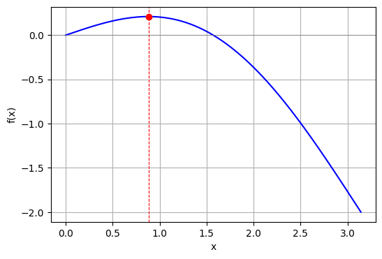
2.1.1 导数的定义
==导数的定义==
导数是切线的斜率, 而切线的斜率可以定义为割线的斜率在两点间距趋于 0 时的极限.
设函数 f(x) 在点 x_0 附近有定义, 则过点 (x_0, f(x_0)) 和 (x_0 + \Delta x, f(x_0 + \Delta x)) 的割线斜率为 \frac{f(x_0 + \Delta x) - f(x_0)}{\Delta x}
当 \Delta x \to 0 时, 这个割线斜率的极限 (若存在) 就是切线的斜率, 也即导数: f'(x_0) = \lim_{\Delta x \to 0} \frac{f(x_0 + \Delta x) - f(x_0)}{\Delta x} =\lim_{\Delta x \to 0} \frac{\Delta y}{\Delta x}
这样, 切线的斜率和导数都通过极限的方式被严格定义.
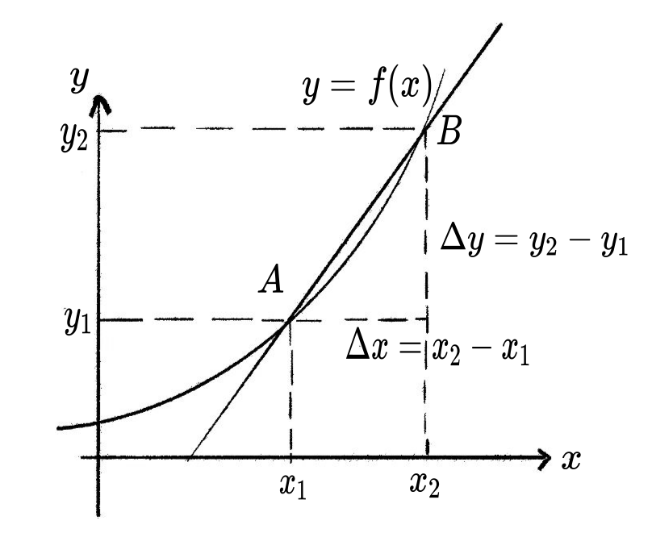
早期, 古希腊数学家如欧几里得和阿波罗尼斯主要用几何方法描述切线, 把切线看作“只与曲线在一点相交且不过该点的直线”. 但这种定义对复杂曲线 (如圆外的曲线) 不适用.
直到17世纪, 笛卡尔和费马等人提出了代数方法, 尝试用斜率和代数方程描述切线. 牛顿和莱布尼茨发明微积分后, 才用“割线的极限”来严格定义切线斜率, 也就是现代导数的定义.
所以, 现代切线的定义必须依靠极限, 因为只有极限才能精确描述“割线趋近于切线”的过程, 从而适用于所有光滑曲线. 没有极限, 切线的定义就不够一般和严密.
求常数函数 f(x) = c 在 x_0 = 1 处的导数。
直接代入导数定义，注意常数函数的函数值不变。
根据导数的定义：
\begin{align*} f'(1) &= \lim_{\Delta x \to 0} \frac{f(1 + \Delta x) - f(1)}{\Delta x} \\ &= \lim_{\Delta x \to 0} \frac{C - C}{\Delta x} = 0. \end{align*}
求函数 f(x) = x^2 在 x_0 = 2 处的导数。
代入导数定义，展开 (2 + \Delta x)^2 后化简，令 \Delta x \to 0。
根据导数的定义：
\begin{align*} f'(2) &= \lim_{\Delta x \to 0} \frac{(2 + \Delta x)^2 - 2^2}{\Delta x} \\ &= \lim_{\Delta x \to 0} \frac{4 + 4\Delta x + (\Delta x)^2 - 4}{\Delta x} \\ &= \lim_{\Delta x \to 0} (4 + \Delta x) = 4. \end{align*}
2.1.2 导函数
对函数 f(x) 定义域上的每一点都求导 (假设每一点的导数都存在), 得到一个新的函数, 称为导函数, 记作 f'(x). 导函数是由 f(x) 衍生出来的, 正好和 Derivative (导数) 的意思一致.
数学中的“导数” (Derivative) 是由原函数“衍生”出来的新函数, 反映原函数的变化率.
金融中的“衍生品” (Derivative) 是指价值依赖于其他基础资产 (如股票, 债券等) 的金融工具. 期权 (Option) 是一种金融衍生品, 允许持有者以指定价格来购买股票. - 如果股票价格上涨 (函数递增), 看涨期权的价值增加 (导数为正). - 如果股票价格下跌 (函数递减), 看涨期权的价值减少 (导数为负).
类比: - 数学导数: f'(x) 依赖于 f(x), 描述 f(x) 的变化率, 是由 f(x) “衍生”出来的. - 金融期权: 期权的价格依赖于股票价格, 是由股票“衍生”出来的金融产品.
求函数 f(x) = x^2 的导函数。
代入导数定义，对一般的 x 展开并化简，令 \Delta x \to 0。
\begin{align*} f'(x) &= \lim_{\Delta x\to 0} \frac{(x+\Delta x)^2 - x^2}{\Delta x}\\ &= \lim_{\Delta x\to 0} \frac{2x\Delta x + \Delta x^2}{\Delta x} \\ &= \lim_{\Delta x\to 0} (2x + \Delta x) = 2x. \end{align*}
求函数 f(x) = \cos x 的导数。
代入导数定义，用和差化积公式将 \cos(x+\Delta x) - \cos x 变形，再利用 \displaystyle\lim_{\theta\to 0}\frac{\sin\theta}{\theta}=1。
\begin{align*} f'(x) &= \lim_{\Delta x \to 0} \frac{\cos(x + \Delta x) - \cos x}{\Delta x} \\ &= \lim_{\Delta x \to 0} \frac{-2 \sin\left( x + \frac{\Delta x}{2} \right) \sin\left( \frac{\Delta x}{2} \right)}{\Delta x} \\ &= - \lim_{\Delta x \to 0} \sin\left( x + \frac{\Delta x}{2} \right) \cdot \lim_{\Delta x \to 0} \frac{\sin \frac{\Delta x}{2}}{\frac{\Delta x}{2}} \\ &= -\sin x. \end{align*}
2.1.3 幂函数, 对数函数和指数函数的导数
求正整数次幂函数 f(x) = x^m 的导数（m 为正整数）。
分 m=1 和 m>1 两种情况，后者利用二项式定理展开 (x+\Delta x)^m，提取 \Delta x 后令其趋于零。
当 m = 1 时：
f'(x) = \lim_{\Delta x \to 0} \frac{(x+\Delta x) - x}{\Delta x} = \lim_{\Delta x \to 0} \frac{\Delta x}{\Delta x} = 1.
当 m > 1 时，利用二项式定理：
\begin{align*} f'(x) &= \lim_{\Delta x \to 0} \frac{(x+\Delta x)^m - x^m}{\Delta x} \\ &= \lim_{\Delta x \to 0} \left[ \frac{x^m + m x^{m-1} \Delta x + \frac{m(m-1)}{2} x^{m-2} (\Delta x)^2 + \cdots + (\Delta x)^m - x^m}{\Delta x} \right]\\ &= \lim_{\Delta x \to 0} \left[ m x^{m-1} + \frac{m(m-1)}{2} x^{m-2} \Delta x + \cdots + (\Delta x)^{m-1} \right] \\ &= m x^{m-1}. \end{align*}
考虑到 x^0 = 1，两种情况统一为：
(x^m)' = m x^{m-1}, \quad m = 1, 2, \cdots
我们不加证明的指出, 上述公式对任意的 m \in \mathbb{R} 都成立, 即 \boxed{ (x^m)' = m x^{m-1}, \ m \in \mathbb{R}. }
在计算指数函数和对数函数的导数时我们需要用到下面的结论. 我们可以把他们当作求极限的练习题.
先导结论1: \displaystyle \lim_{x \to 0} \frac{\ln(1+ x)}{x} = 1
证明: 利用重要极限的结论, \begin{align*} \lim_{x \to 0} \frac{\ln(1 + x)}{x} &= \lim_{x \to 0} \ln (1+x)^{\frac{1}{x}} \\ &=\ln e = 1 \end{align*}
先导结论2: \displaystyle \lim_{x \to 0} \frac{\log_a(1+ x)}{x} = \frac{1}{\ln a}
证明: 利用对数换底公式, \begin{align*} \lim_{x \to 0} \frac{\log_a (1+x)}{x} &= \lim_{x \to 0} \frac{\frac{\ln(1+x)}{\ln a}}{x} \\ &= \frac{1}{\ln a} \lim_{x \to 0} \frac{\ln(1+x)}{x} \\ &= \frac{1}{\ln a} \end{align*}
==对数函数的导数==
求对数函数 f(x) = \log_u x 的导数, 其中 u 是大于 0 且不等于 1 的常数.
解: f'(x) = \lim_{\Delta x \to 0} \frac{\log_u (x + \Delta x) - \log_u x}{\Delta x}
利用换底公式 \displaystyle \log_u a = \frac{\ln a}{\ln u},
\begin{align*} f'(x) &= \lim_{\Delta x \to 0} \frac{\frac{\ln(x + \Delta x)}{\ln u} - \frac{\ln x}{\ln u}}{\Delta x} \\ &= \frac{1}{\ln u} \cdot \lim_{\Delta x \to 0} \frac{\ln(x + \Delta x) - \ln x}{\Delta x} \\ &= \frac{1}{\ln u} \cdot \lim_{\Delta x \to 0} \frac{\ln\left(1 + \frac{\Delta x}{x}\right)}{\Delta x} \\ &= \frac{1}{x \ln u} \cdot \lim_{\Delta x \to 0} \frac{\ln\left(1 + \frac{\Delta x}{x}\right)}{\frac{\Delta x}{x}} \end{align*}
令 \displaystyle h = \frac{\Delta x}{x}, 当 \Delta x \to 0 时 h \to 0, 则: f'(x) = \frac{1}{x \ln u} \cdot \lim_{h \to 0} \frac{\ln(1 + h)}{h} = \frac{1}{x \ln u}
注: 最后一步用到了上面的先导结论.
由此我们得到对数函数的导数为:
\boxed{(\log_u x)' = \frac{1}{x \ln u}}
特别的, 当 u=e 时, \log_u x = \ln x, 此时 \boxed{(\ln x)' = \frac{1}{x}}
==指数函数的导数==
求指数函数 f(x) = q^x 的导数, 其中底数 q 是大于 0 且不等于 1 的常数.
解:
\begin{align*} f'(x) &= \lim_{\Delta x \to 0} \frac{q^{x + \Delta x} - q^x}{\Delta x} \\ &= \lim_{\Delta x \to 0} \frac{q^x \cdot q^{\Delta x} - q^x}{\Delta x} \\ &= q^x \cdot \lim_{\Delta x \to 0} \frac{q^{\Delta x} - 1}{\Delta x} \end{align*}
我们注意到当 \displaystyle \Delta x\to 0 时, \displaystyle q^{\Delta x} \to 1
而 \displaystyle q^{\Delta x} -1 \to 0, 于是我们把 \displaystyle q^{\Delta x} -1 看作一个新的变量 h, 故此时有当 \displaystyle \Delta x\to 0 时 h \to 0.
于是根据极限运算的换元法 \lim_{\Delta x \to 0} \frac{q^{\Delta x} - 1}{\Delta x} = \lim_{h \to 0} \frac{h}{\log_q(1+h)} = \ln q
上式中的最后一个等式用到了前面的先导结论.
因此, \boxed{(q^x)' = q^x \ln q}
这就是指数函数的导数公式.
特别的, 当 q = e 时, 有 \boxed{(e^x)' = e^x}
也就是说, 以欧拉数 e 为底数的指数函数的导数正是它自己, 由此也可以看出 e 在数学上的特殊性.
2.1.4 可导函数与连续函数
处处可导的函数称为可导函数, 处处连续的函数称为连续函数. 函数在一点可导则在该点也必连续, 但函数在一点连续并不保证在该点可导.
==连续但不可导的反例1==
绝对值函数 f(x) = |x| 在 0 点连续但不可导.
绝对值函数在 x = 0 处是连续的. 在 x=0 处, \lim_{\Delta x \to 0} \frac{f(0+\Delta x)-f(0)}{\Delta x} = \lim_{\Delta x \to 0} \frac{|\Delta x|}{\Delta x}
当 \Delta x < 0 时, \displaystyle \frac{|\Delta x|}{\Delta x} = -1;
当 \Delta x > 0 时, \displaystyle \frac{|\Delta x|}{\Delta x} = 1,
左右极限不相等, 故极限不存在, 因此, 函数 f(x) = |x| 在 x=0 处不可导.
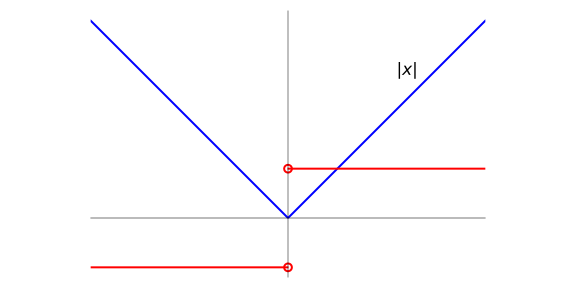
==连续但不可导的反例2==
函数 \displaystyle f(x) = x^{\frac{1}{3}} 在 0 点处连续但不可导.
函数在 x = 0 处连续. 下面我们来计算该函数在 x=0 处的导数.
- 方法一: 根据定义计算
\frac{f(0+\Delta x)-f(0)}{\Delta x} = \frac{(0+\Delta x)^{\frac{1}{3}} - 0^{\frac{1}{3}}}{\Delta x} = (\Delta x)^{-\frac{2}{3}}.
当 \Delta x \to 0 时, 极限趋于无穷大, 故函数在 x = 0 处不可导.
- 方法二: 对导函数取极限
根据幂函数的求导公式可以得到
f'(x) = \frac{1}{3}x^{-\frac{2}{3}}, \ x\ne 0.
当 x \to 0 时, 导函数 f'(x) 趋于无穷大, 提示 f'(0) 可能不存在. 需要特别指出, 上述对导数取极限的做法主要提供一个感性认识(直觉), 要严格证明导数在 0 点不存在还是需要根据定义计算.
注意:
上述两种方法都涉及到极限, 但是取极限的对象不同, 方法一中是对 \Delta x 取极限, 而方法二中是对 x 取极限, 尽管都趋于无穷大(而且指数项都是 -\frac{2}{3}), 但两者的意义是不一样的, 请注意体会.
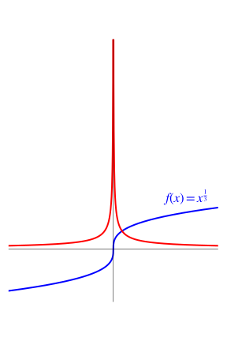
2.1.5 单侧导数
在计算绝对值函数在 0 点的导数时, 我们注意到 f(x) = |x| 在 0 点左右两侧的切线斜率都存在, 为了更加细致的分析函数的行为, 我们可以引入单侧导数的概念.
我们定义函数 f(x) 在 x_0 处的左导数 f'_-(x_0) = \lim_{\Delta x \to 0^-} \frac{f(x_0 + \Delta x ) - f(x_0)}{\Delta x },
和右导数 f'_+(x_0) = \lim_{\Delta x \to 0^+} \frac{f(x_0 + \Delta x ) - f(x_0)}{\Delta x }.
左导数和右导数统称为单侧导数, 函数 $ f(x) $ 在点 $ x_0 $ 处可导的条件是左导数和右导数都存在且相等.
对绝对值函数在 x_0 = 0 点处而言, 其单侧导数都存在, 但是不相等, 因此在该点并不可导.
2.2 导数的计算
求给定函数的导数的操作称为求导运算. 本节将介绍常见函数的求导公式与导数的四则运算法则. 熟练运用这些法则, 将能显著简化求导过程, 提高运算效率.
2.2.1 初等函数求导公式
- 幂函数
- 如果 f(x) = x^n, 则: \displaystyle f'(x) = n \cdot x^{n-1}
- 指数函数
如果 f(x) = e^x, 则: \displaystyle f'(x) = e^x
如果 f(x) = a^x, 则: \displaystyle f'(x) = a^x \ln(a)
- 对数函数
如果 f(x) = \ln(x), 则: \displaystyle f'(x) = \frac{1}{x}
如果 f(x) = \log_a(x), 则: \displaystyle f'(x) = \frac{1}{x \ln(a)}
- 三角函数
如果 f(x) = \sin(x), 则: \displaystyle f'(x) = \cos(x)
如果 f(x) = \cos(x), 则: \displaystyle f'(x) = -\sin(x)
- 反三角函数 (不要求)
如果 f(x) = \arcsin(x), 则: \displaystyle f'(x) = \frac{1}{\sqrt{1 - x^2}}
如果 f(x) = \arccos(x), 则: \displaystyle f'(x) = \frac{-1}{\sqrt{1 - x^2}}
如果 f(x) = \arctan(x), 则: \displaystyle f'(x) = \frac{1}{1 + x^2}
2.2.2 导数的四则运算
下面的导数四则法则都可以根据导数的定义加以证明.
- 加法: 若函数 f(x) 和 g(x) 在点 x 处可导, 则:
\boxed{ [f(x) + g(x)]' = f'(x) + g'(x) }
证明: 根据导数的定义: \begin{align*} [f(x) + g(x)]' &= \lim_{h \to 0} \frac{[f(x+h) + g(x+h)] - [f(x) + g(x)]}{h} \\ & = \lim_{h \to 0} \left[ \frac{f(x+h) - f(x)}{h} + \frac{g(x+h) - g(x)}{h} \right] \\ & = \lim_{h \to 0} \frac{f(x+h) - f(x)}{h} + \lim_{h \to 0} \frac{g(x+h) - g(x)}{h} \\ & = f'(x) + g'(x) \end{align*}
- 减法: 若函数 f(x) 和 g(x) 在点 x 处可导, 则:
\boxed{ [f(x) - g(x)]' = f'(x) - g'(x) }
该性质的证明跟导数的加法运算完全类似.
- 乘法: 若函数 f(x) 和 g(x) 在点 x 处可导, 则: \boxed{ [f(x) \cdot g(x)]' = f'(x)g(x) + f(x)g'(x) }
证明: 根据导数的定义: \begin{align*} [f(x)g(x)]' &= \lim_{h \to 0} \frac{f(x+h)g(x+h) - f(x)g(x)}{h} \\ &= \lim_{h \to 0} \frac{f(x+h)g(x+h) - f(x+h)g(x) + f(x+h)g(x) - f(x)g(x)}{h} \\ &= \lim_{h \to 0} \left( f(x+h) \frac{g(x+h) - g(x)}{h} + g(x) \frac{f(x+h) - f(x)}{h} \right) \\ &= \lim_{h \to 0} f(x+h) \cdot \lim_{h \to 0} \frac{g(x+h) - g(x)}{h} + g(x) \cdot \lim_{h \to 0} \frac{f(x+h) - f(x)}{h} \\ &= f(x)g'(x) + g(x)f'(x) \end{align*}
- 除法 若函数 f(x) 和 g(x) 在点 x 处可导, 且 g(x) \ne 0, 则: \boxed{ \left[ \frac{f(x)}{g(x)} \right]' = \frac{f'(x)g(x) - f(x)g'(x)}{[g(x)]^2} }
证明: \dfrac{f(x)}{g(x)} 可以看作 f(x) 与 \dfrac{1}{g(x)} 的乘积, 而 \dfrac{1}{g(x)} 可以看成是函数 \dfrac{1}{x} 与 g(x) 的复合. 于是我们可以联合复合函数求导和上面的乘法求导法则来推导上述除法求导公式. \begin{align*} \left[ \frac{f(x)}{g(x)} \right]' &= f'(x)\left[ \dfrac{1}{g(x)} \right] + f(x)\left[ \dfrac{1}{g(x)} \right]'\\ &= \dfrac{f'(x)}{g(x)} - f(x) \cdot \dfrac{g'(x)}{[g(x)]^2} \\ &= \frac{f'(x)g(x) - f(x)g'(x)}{[g(x)]^2} \end{align*}
求函数 y = 3x^3 - 4x^2 + 5x - 9 的导数。
对多项式逐项求导，利用幂函数求导公式 (x^n)' = nx^{n-1} 和常数的导数为零。
\begin{align*} y' &= (3x^3)' - (4x^2)' + (5x)' - (9)' \\ &= 3 \cdot 3x^{3-1} - 4 \cdot 2x^{2-1} + 5 \cdot 1x^{1-1} - 0\\ &= 9x^2 - 8x + 5. \end{align*}
求函数 y = 2e^{x}(\sin x + 2\cos x) 的导数。
把 2e^x 和 (\sin x + 2\cos x) 看作两个因子，应用乘积法则 (uv)' = u'v + uv'。
\begin{align*} y' &= (2e^{x})'(\sin x + 2\cos x) + 2e^{x}(\sin x + 2\cos x)' \\ &= 2e^{x}(\sin x + 2\cos x) + 2e^{x}(\cos x - 2\sin x) \\ &= 2e^{x}\sin x + 4e^{x}\cos x + 2e^{x}\cos x - 4e^{x}\sin x \\ &= 6e^{x}\cos x - 2e^{x}\sin x \\ &= 2e^{x}(3\cos x - \sin x). \end{align*}
求函数 f(x) = x^3 + 3\sin x + \dfrac{5}{2} 的导函数 f'(x) 及 f'\!\left(\dfrac{\pi}{4}\right)。
逐项求导后代入 x = \dfrac{\pi}{4}。
\begin{align*} f'(x) &= (x^3)' + (3\sin x)' + \left( \frac{5}{2} \right)' \\ &= 3x^2 + 3\cos x. \end{align*}
代入 x = \dfrac{\pi}{4}：
f'\!\left( \frac{\pi}{4} \right) = 3\left(\frac{\pi}{4}\right)^2 + 3\cos\frac{\pi}{4} = \frac{3\pi^2}{16} + \frac{3\sqrt{2}}{2}.
求函数 y = \tan x 的导数。
将 \tan x = \dfrac{\sin x}{\cos x} 写成商的形式，再应用商法则。
\begin{align*} y' &= \left( \frac{\sin x}{\cos x} \right)' \\ &= \frac{(\sin x)' \cos x - \sin x (\cos x)'}{\cos^2 x} \\ &= \frac{\cos^2 x + \sin^2 x}{\cos^2 x} = \frac{1}{\cos^2 x}. \end{align*}
2.2.3 高阶导数
导函数也是函数, 所以可以继续对导函数求导, 也就是二阶导数. 二阶导数反应了导函数的变化率. 依次可以继续到三阶导数, 四阶导数, …
f''(x) = (f'(x))'
高阶导数
- f'(x), f''(x), f'''(x), f^{(n)}(x), \cdots.
设 y = ax^2 + bx + c，求二阶导数 y''。
先对 y 求一阶导数，再对 y' 再次求导。
一阶导数：
y' = 2ax + b.
二阶导数：
y'' = 2a.
求幂函数 y = x^{a}（a 是任意常数）的 n 阶导数 y^{(n)}。
逐次求导，观察规律：每次求导乘以递减的因子，指数减 1；对整数次幂的情形讨论 m \le n 与 m > n 两种情况。
逐次求导：
\begin{align*} y' &= a x^{a-1},\\ y'' &= a (a - 1) x^{a-2},\\ y''' &= a (a - 1)(a - 2) x^{a-3}. \end{align*}
一般的：
y^{(n)} = a (a - 1)(a - 2) \cdots (a - n + 1) x^{a-n}.
特别地，当 a = n 为正整数时：
(x^n)^{(m)} = \begin{cases} C_n^m \, m! \, x^{n-m}, & m \le n, \\ 0, & m > n. \end{cases}
在物理中, 给定位移关于时间的函数 s(t), 物体的速度 v(t) 便是 s(t) 的导数.
我们来看两个例子.
自由落体运动
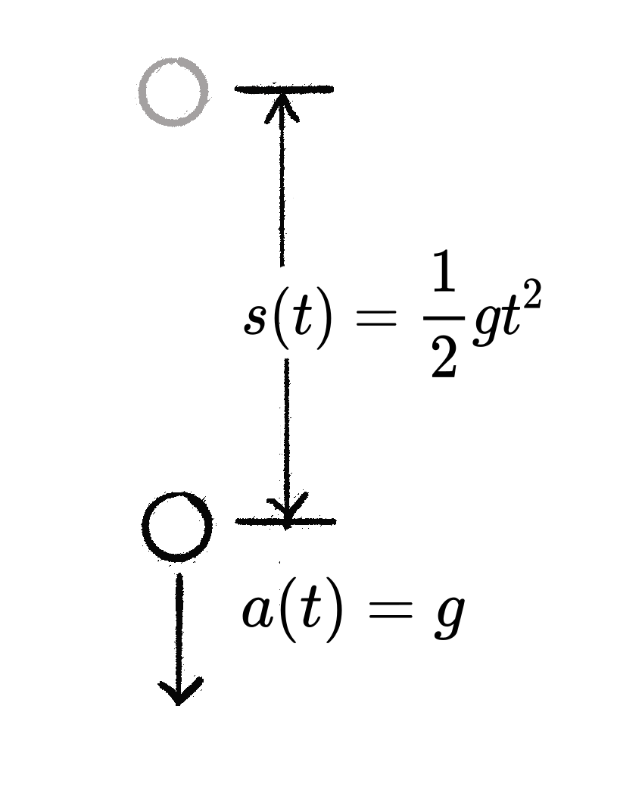
从静止开始的自由落体物体, 其位移随时间的函数为
s(t) = \frac{1}{2}gt^2.
该物体的速度对应 s(t) 的导数, 即 v(t) = s'(t) = gt.
其加速度对应 v(t) 的导数, 或 s(t) 的二阶导数, a(t) = v'(t) = s''(t) = g.
所以自由落体为加速度等于 g 的匀加速直线运动. 这与自由下落物体的牛顿第二定律 F = mg = ma 是吻合的.
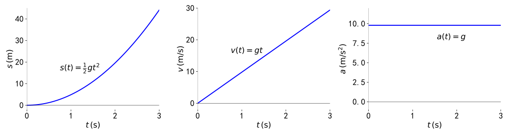
简谐振动
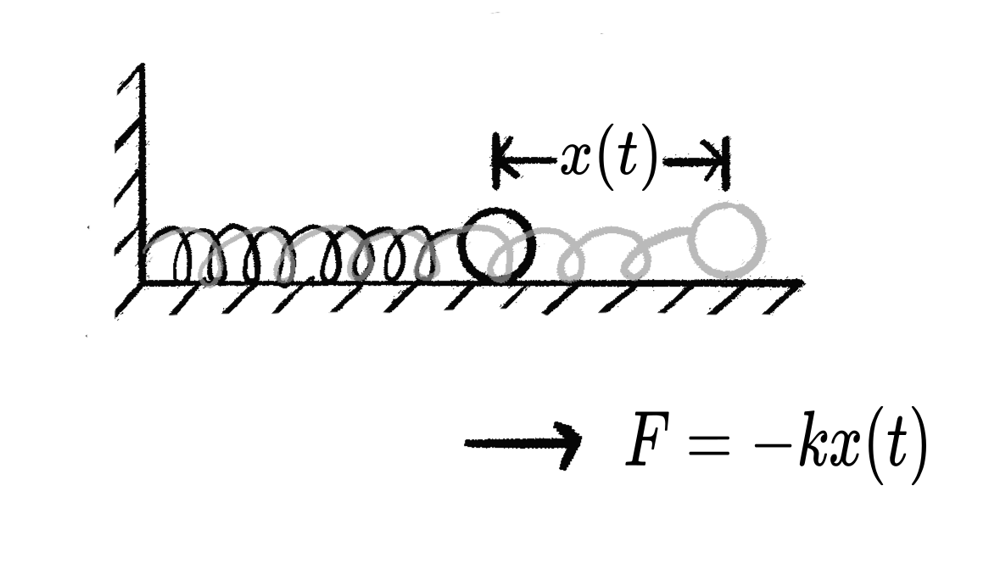
连结弹簧的小球在光滑水平面上围绕平衡位置做振荡运动, 其位移随时间的函数为
x(t) = A \sin (\omega t).
其瞬时速度为 x(t) 的导数, 即 v(t) = x'(t) = A \omega \cos(\omega t).
其加速度对应 v(t) 的导数, 或 x(t) 的二阶导数, a(t) = v'(t) = x''(t) = - A \omega^2 \sin (\omega t).
对 A = 2, \omega = \dfrac{2\pi}{3}, 小球的位移, 速度和加速度如下图.
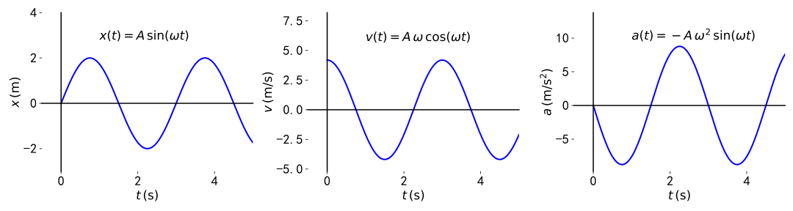
注意, 加速度和位移满足关系 a(t) = -k x(t) 其中常数 k = \omega^2. 而另一方面, 由胡克定律和牛顿第二定律, 我们可以得到小球的运动方程为 F = ma(t) = -kx(t) 可见我们刚才从运动方程中得到的加速度与位移的关系与牛顿定律的结论是吻合的(在相差一个可约化的常数 m 的意义下).
2.3 利用导数来研究函数的性质
导数是用来研究函数性质的直观工具.
2.3.1 单调性
- 导数>0, 单调递增;
- 导数<0, 单调递减;
- 导数=0, 无法判断.
讨论函数 y = x + \cos x 在 [0, 2\pi] 上的单调性。
求导后判断导数在区间上的符号。
函数在 [0, 2\pi] 上连续，在 (0, 2\pi) 内可导。求导得：
y' = 1 - \sin x \ge 0.
故函数 y = x + \cos x 在 [0, 2\pi] 上单调递增。
讨论函数 y = e^x - x + 3 的单调性。
求导后，分析 y' = e^x - 1 在 x < 0 和 x \ge 0 时的正负。
对函数求导得：
y' = e^x - 1.
- 当 x < 0 时，y' < 0，故函数在 (-\infty, 0] 上单调递减；
- 当 x \ge 0 时，y' \ge 0，故函数在 [0, +\infty) 上单调递增。
2.3.2 极值
导数为 0 的点也称为驻点或临界点, 在临界点处:
- 二阶导数 >0 \Rightarrow 极小
- 二阶导数 <0 \Rightarrow 极大
- 二阶导数 =0 \Rightarrow 无法判断.
求函数 f(x) = x^4 - 4x^2 的极值。
令一阶导数 f'(x) = 0 求出临界点，再用二阶导数判断各临界点处的极值类型。
令一阶导数等于零：
f'(x) = 4x^3 - 8x = 4x(x^2 - 2) = 0.
临界点为：
x_1 = 0, \quad x_2 = \sqrt{2}, \quad x_3 = -\sqrt{2}.
二阶导数为：
f''(x) = 12x^2 - 8.
计算各临界点处的二阶导数：
- x_1 = 0：f''(0) = -8 < 0，为极大值，f(0) = 0；
- x_2 = \sqrt{2}：f''(\sqrt{2}) = 16 > 0，为极小值，f(\sqrt{2}) = -4；
- x_3 = -\sqrt{2}：f''(-\sqrt{2}) = 16 > 0，为极小值，f(-\sqrt{2}) = -4。
设 f(x) 在 [a, b] 上连续, 则其最大值和最小值可按以下步骤求解:
- 确定临界点:
- 求 f(x) 在 (a, b) 内的 驻点 (即 f'(x) = 0 的解);
- 找出 f(x) 的 不可导点 (如间断点, 无穷大点等).
- 计算候选值:
- 计算驻点, 不可导点处的函数值 f(x_i);
- 计算端点值 f(a) 和 f(b).
- 比较结果: 选出最大值和最小值
假设马以均匀速度行进，现需骑马从点 A 到点 B，但必须先去河边（直线）喝一次水。已知点 A 和点 B 在河的同侧，求耗时最短的路径。
建立坐标系： - 设河边为 x 轴； - 点 A 坐标为 (0, h_1)，点 B 坐标为 (l, h_2)，其中 h_1 > 0, h_2 > 0； - 设饮水点为 P(x, 0)，其中 x \in [0, l]。

路径总长度是 x 的函数，对其求导令导数为零，找到最短路径对应的 x。
路径总长度 S(x) 为：
S(x) = \sqrt{h_1^2 + x^2} + \sqrt{h_2^2 + (l - x)^2}.
对 S(x) 求导：
S'(x) = \frac{x}{\sqrt{h_1^2 + x^2}} - \frac{l - x}{\sqrt{h_2^2 + (l - x)^2}}.
令 S'(x) = 0，得：
\frac{x}{\sqrt{h_1^2 + x^2}} = \frac{l - x}{\sqrt{h_2^2 + (l - x)^2}}.
解得：
x = \frac{l h_1}{h_1 + h_2}.
将点 B 关于 x 轴作对称点 B'，直线 AB' 与 x 轴的交点即为最短路径的饮水点，利用三角形相似得到 x。
将点 B 关于 x 轴（河边）反射到点 B'，坐标为 (l, -h_2)。
连接点 A(0, h_1) 和点 B'(l, -h_2)，与 x 轴的交点即为饮水点 P。根据三角形相似，同样可得：
x = \frac{l h_1}{h_1 + h_2}.
这个方法利用了镜面反射原理，基于直线最短得到了快速直观的解法。

现需骑马从点 A 到点 B，但必须先去河边（直线）喝一次水。已知点 A 和点 B 在河的同侧，且马在喝水前速度为 v_1，喝水后速度为 v_2 < v_1，求耗时最短的路径。
坐标系同上：A = (0, h_1)，B = (l, h_2)，饮水点 P = (x, 0)，x \in [0, l]。
注意：对这个题目而言，镜面反射原理不适用，但微积分方法仍然适用。
总时间 T(x) 是路程除以速度的和，对 T(x) 求导令其为零，分析令 T'(x) = 0 的几何意义。
总时间为：
T(x) = \frac{\sqrt{h_1^2 + x^2}}{v_1} + \frac{\sqrt{h_2^2 + (l - x)^2}}{v_2}.
对 T(x) 求导得：
\begin{align*} T'(x) &= \frac{1}{v_1} \cdot \frac{x}{\sqrt{h_1^2 + x^2}} - \frac{1}{v_2} \cdot \frac{l - x}{\sqrt{h_2^2 + (l - x)^2}}. \end{align*}
令 T'(x) = 0，得：
\frac{1}{v_1} \cdot \frac{x}{\sqrt{h_1^2 + x^2}} = \frac{1}{v_2} \cdot \frac{l - x}{\sqrt{h_2^2 + (l - x)^2}}.
设 \theta_1 为 AP 与竖直方向的夹角，\theta_2 为 PB 与竖直方向的夹角，则 \sin\theta_1 = \dfrac{x}{\sqrt{h_1^2+x^2}}，\sin\theta_2 = \dfrac{l-x}{\sqrt{h_2^2+(l-x)^2}}，上式即：
\frac{\sin \theta_1}{v_1} = \frac{\sin \theta_2}{v_2}.
这正是斯涅耳定律（Snell’s Law），说明耗时最短的路径满足与光的折射相同的规律。

2.3.3 凸性
如果函数 f(x) 满足: 对于定义域内任意的 x_1, x_2, 都有 f\left(\frac{x_1 + x_2}{2}\right) \leq \frac{f(x_1) + f(x_2)}{2} 则称函数 f(x) 是凸函数.
更一般地, 对于任意 t \in [0,1], 都有: f(tx_1 + (1-t)x_2) \leq tf(x_1) + (1-t)f(x_2) 这称为Jensen不等式, 是凸函数的等价定义.
与凸函数相对的, 我们还有凹函数的概念. 如果在上面的定义中把不等号反向, 我们就得到了凹函数的定义. 不难发现, 讨论函数 f(x) 的凹性等价于讨论函数 -f(x) 的凸性, 所以我们有凸性的定义就够用了.
注意: 这里采用的是国际通用的凸函数定义 (“凸”对应英文的”convex”), 与某些国内教材的定义可能相反.
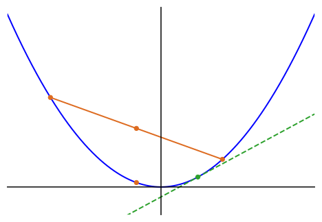
弦在图像上方: 凸函数图像上任意两点间的弦 (连接这两点的线段) 始终位于函数图像之上或与之重合.
切线在图像下方: 对于可导的凸函数, 其图像上任意一点的切线都位于函数图像之下.
局部极小即全局极小: 凸函数的任何局部极小值点都是全局极小值点, 这一性质在优化问题中极为重要.
对于二阶可导的函数 f(x):
- 若在区间 I 上 f''(x) \geq 0, 则 f(x) 在 I 上是凸函数
- 若在区间 I 上 f''(x) \leq 0, 则 f(x) 在 I 上是凹函数
- 若在区间 I 上 f''(x) > 0, 则 f(x) 在 I 上是严格凸函数
- 若在区间 I 上 f''(x) < 0, 则 f(x) 在 I 上是严格凹函数
- 凸函数的局部极小值就是全局极小值.
- 严格凸函数若有极小值, 则极小值点唯一.
凸函数的良好性质使其在优化理论中占据核心地位: - 全局最优性: 凸优化问题的任何局部最优解都是全局最优解. - 高效算法: 存在多种高效算法 (如梯度下降法, 内点法等) 求解凸优化问题.
判断函数 y = \sqrt{x}（x \ge 0）的凹凸性。
计算二阶导数，根据其符号判断函数的凹凸性。
函数的一阶导数和二阶导数分别为：
\begin{align*} y' &= \frac{1}{2\sqrt{x}}, \\ y'' &= -\frac{1}{4x^{3/2}}. \end{align*}
在函数定义域 (0, +\infty) 内 y'' < 0，故 y = \sqrt{x} 为凹函数。
判断函数 y = x^2 的凹凸性。
计算二阶导数，根据其符号判断凹凸性。
计算二阶导数：y'' = 2 > 0，故 y = x^2 为凸函数。
判断函数 y = \ln x（x > 0）的凹凸性。
计算二阶导数，根据其符号判断凹凸性。
计算二阶导数：y'' = -\dfrac{1}{x^2} < 0，故 y = \ln x 为凹函数。
- 凸函数的非负加权和仍是凸函数
定理: 若 f_1(x), f_2(x), \ldots, f_n(x) 都是凸函数, 且 \alpha_1, \alpha_2, \ldots, \alpha_n \geq 0, 则函数
g(x) = \alpha_1 f_1(x) + \alpha_2 f_2(x) + \cdots + \alpha_n f_n(x)
也是凸函数.
几何解释: 见下面的例子.
- 凸函数的逐点最大值仍是凸函数
定理: 若 f_1(x), f_2(x), \ldots, f_n(x) 都是凸函数, 则函数 h(x) = \max\{f_1(x), f_2(x), \ldots, f_n(x)\} 也是凸函数.
几何解释: 见下面的例子.
- 凸函数的仿射变换仍是凸函数
定理: 若 f(x) 是凸函数, 则对于任意 a \neq 0 和任意 b, 函数 k(x) = f(ax + b) 也是凸函数.
几何解释: 仿射变换 ax + b 对应于坐标轴的缩放和平移, 这些操作不会改变函数的凸性.
考虑两个凸函数: - f_1(x) = x^2 (凸函数, 因为 f_1''(x) = 2 > 0) - f_2(x) = e^x (凸函数, 因为 f_2''(x) = e^x > 0)
取非负权重 \alpha_1 = 2, \alpha_2 = 1, 则 g(x) = 2x^2 + e^x 也是凸函数, 因为 g''(x) = 4 + e^x > 0
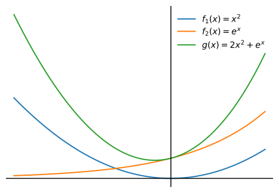
考虑两个凸函数: f_1(x) = x^2, f_2(x) = (x-1)^2 + 1 则它们的逐点最大值 h(x) = \max\{x^2, (x-1)^2 + 1\} 也是凸函数.
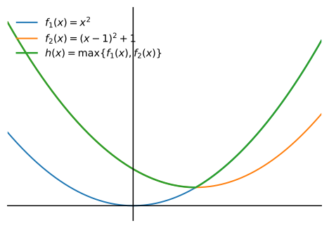
考虑凸函数 f(x) = x^2，取 a = 2, b = 1，验证 k(x) = f(2x + 1) 也是凸函数。
利用二阶导数判别凸函数。
取 a = 2, b = 1，则 k(x) = f(2x + 1) = (2x + 1)^2 = 4x^2 + 4x + 1 也是凸函数，因为 k''(x) = 8 > 0
支持向量机(SVM)是机器学习中的重要算法. SVM的优化问题利用了保凸运算的性质, 其待优化的目标函数可以表示为: \min_{w,b} \frac{1}{2}\|w\|^2 + C\sum_{i=1}^n \max(0, 1-y_i(w^T x_i + b))
其中向量 w 和标量 b 是待优化的自变量. 这里: - \frac{1}{2}\|w\|^2 是凸函数 (二次函数的叠加) - \max(0, 1-y_i(w^T x_i + b)) 是凸函数 (凸函数的逐点最大值) - 它们的非负加权和 (C > 0) 仍然是凸函数
因此, SVM的优化问题是凸优化问题, 保证了全局最优解的存在性和高效求解的可能性.
与支持向量机(SVM)等凸优化问题不同, 神经网络的损失函数通常是高度非凸的. 神经网络的非凸性不是缺陷, 而是其特征的一部分. 理解这一性质不仅帮助我们设计更好的优化算法, 也促使我们重新思考机器学习中的基本概念.
上机实验
- nonconvex_landscape.ipynb: 非凸损失函数的景观示例.
2.4 导数在人工智能中的应用: 梯度下降法
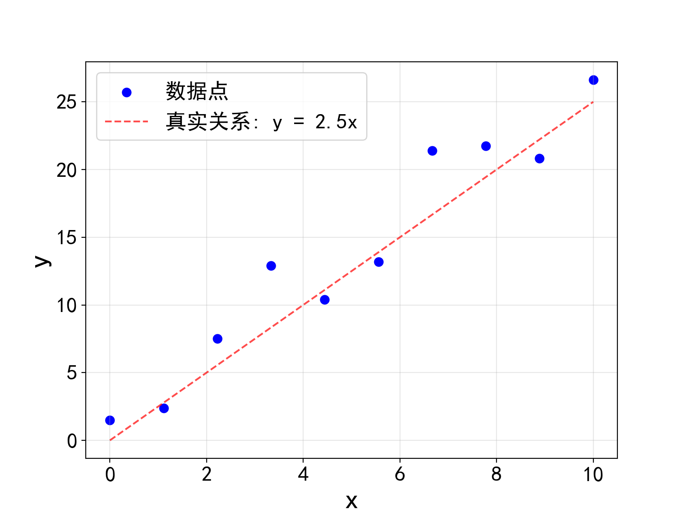
我们考虑一个简化的数据拟合问题, 如图所示, 假设我们有一组数据点 \{(x_i, y_i)\}, i=1,2,\cdots,N. 根据图中数据点的分布情况, 我们猜想这组数据大致符合正比例关系, 即 y_i = k x_i + n_i 其中 n_i 为噪声, k 为待定常数. 我们希望从数据中估计出 k 的具体取值.
为了评判在给定的参数 k 下上述模型对数据的拟合程度, 我们引入损失函数
L(k) = \frac{1}{N}\sum_{i=1}^{N} (y_i - k x_i)^2
这是一个关于 k 的函数, 也叫做均方误差(MSE, Mean Square Error). L(k) 的值越小表示 k 所对应的直线与数据点符合得越好. 因此我们的目标是找到使得 L(k) 最小的 k, 也就是求解函数 L(k) 的极值问题.
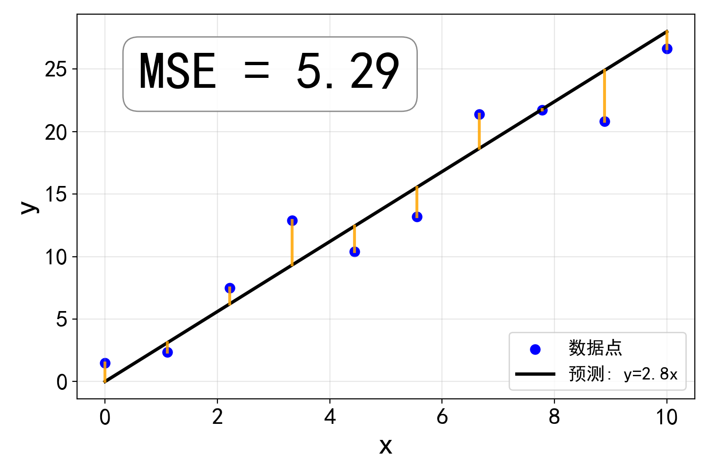
L(k) 的导数为 L'(k) = -\frac{2}{N} \sum_{i=1}^{N} x_i (y_i - k x_i)
满足 L'(k) = 0 的 k 就是函数 L(k) 的极值点. 不难验证 L(k) 是一个凸函数(比如利用凸函数的正加权求和还是凸函数的性质), 因此这个极值点是唯一的, 而且一定是极小值点. 对这个简单的例子而言, 极小值点所对应的 k^* 是可以显式解出来的, 但是对于更加复杂的函数, 求极值点的任务很可能需要借助数值的方法, 例如下面所介绍的梯度下降法.
梯度下降法是一种利用导数信息来寻找函数极小值点的数值算法. 这个过程就好像你在调一台老式收音机, 它只有一个旋钮 k 用来调频道. 你转动旋钮时, 耳朵会立刻听到声音的变化: 有时候, 往一个方向轻轻一转, 会发现杂音立刻变小了, 但也有时候, 刚一转动旋钮, 嗞嗞的噪声突然变大. 整个过程就像是在黑暗中摸索, 只能凭耳朵判断该往哪边走, 一边转旋钮, 一边听声音的变化, 一步步靠近那个最清晰的频道.
损失函数 L(k) 就表示收音机的杂音强度, 我们通过旋钮的微调和耳朵的感受就能够大致估计导数 L'(k), 而导数值能够为我们提供了修正 k 的方向信息: L'(k) > 0 表示噪声 L(k) 随着 k 增大而增大, 所以应该减小 k 来减小噪声 L(k); 反过来, L'(k) <0 表示噪声 L(k) 随着 k 增大而减小, 所以应该增大 k 来减小噪声 L(k), 最终如果找到 L'(k) = 0 的点就找到了噪声最小也就是最清晰的频道.
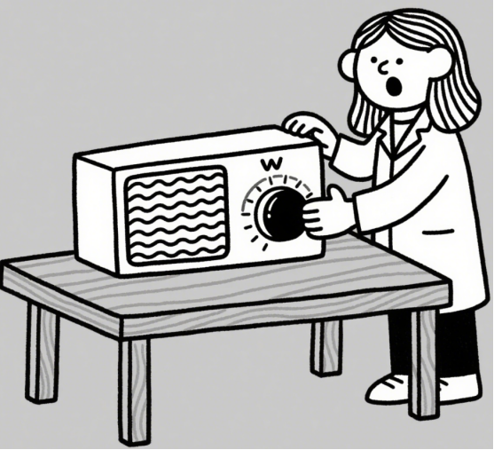
我们把上述调节收音机的过程写成算法, 就得到了梯度下降法: 梯度下降法算法步骤:
输入: 初始参数 k_0, 学习率 \eta, 收敛阈值 \epsilon
过程: 1. 初始化: t \leftarrow 0, k \leftarrow k_0 2. while |L'(k)| > \epsilon:
计算梯度: g \leftarrow L'(k) = -2 \sum_{i=1}^{N} x_i(y_i - kx_i)
更新参数: k \leftarrow k - \eta \cdot g
t \leftarrow t + 1
- end while
输出: 最优参数 k^*
收敛
当导数很接近 0 时(|L'(k)| \le \epsilon), 更新步长会非常小, 参数 k 的变化几乎停下来, 这时我们就找到了让 L(k) 最小的 k, 参数就收敛到了最优点.
学习速率
需要特别注意算法中的参数 \eta, 我们称它为学习速率, 因为它决定了 k 的更新步幅, \eta 的值是需要根据具体问题人为给定的:
- 如果 \eta 太大 → 你猛地把旋钮转过头, 直接跨过谷底, 来回震荡, 甚至跑到更高的山上
- 如果 \eta 太小 → 你像用牙签拨旋钮, 一次几乎没动, 走到谷底需要很久
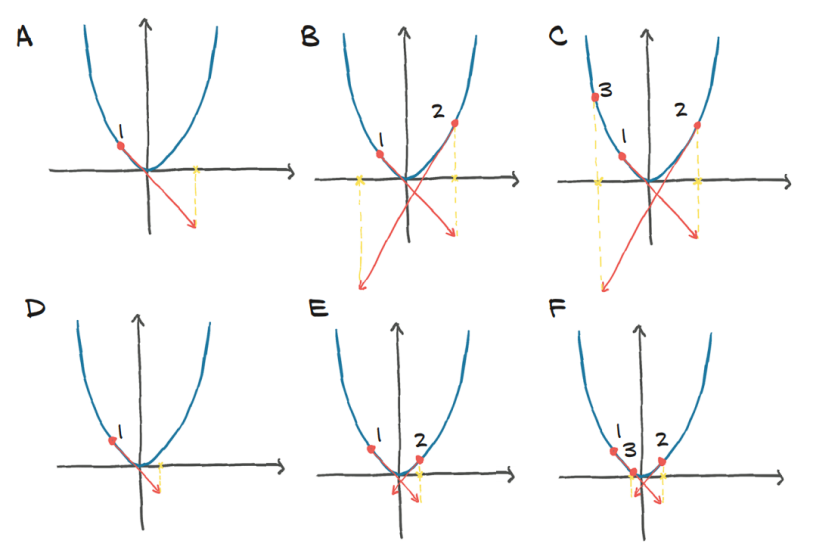
在上面的数据点拟合的例子中, 运用梯度下降法求解上述问题得到的 k 的拟合值如下图. 由于随机误差的存在, 在算法看来对数据拟合得最好的 k = 2.69, 与我们生成数据时所采用的 k=2.5 略有偏差, 在统计意义上这是完全合理的, 而且随着样本点个数 N 的增大, 随机误差的整体效果会逐渐减弱, 算法得到的 k 也会越来越接近真实值.
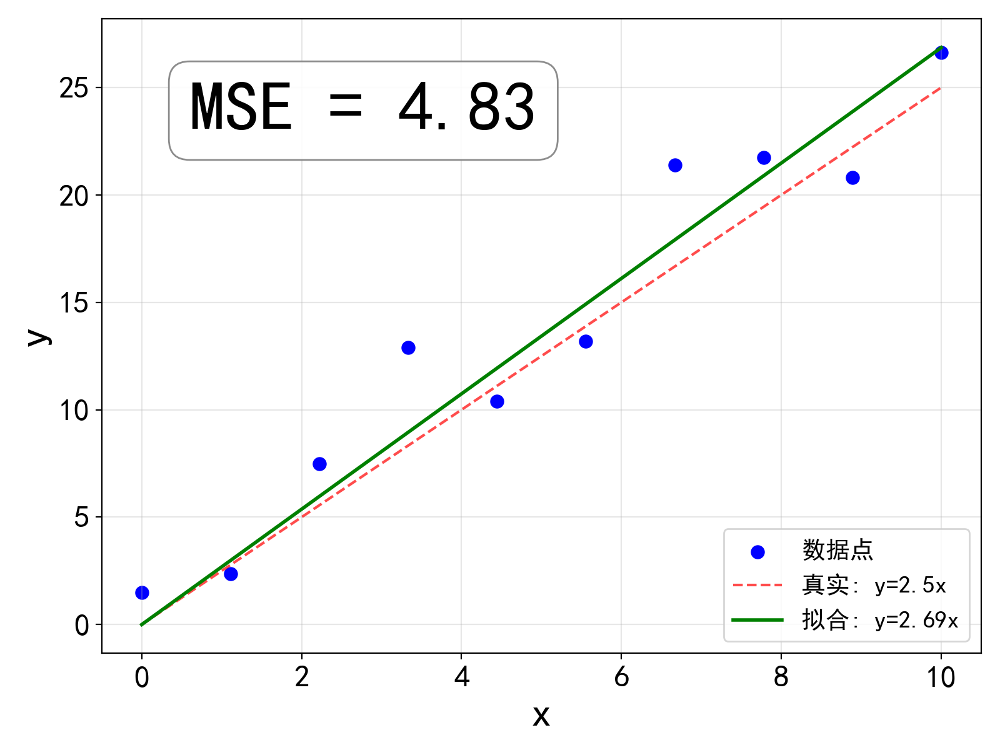
梯度下降法实例: nonconvex_landscape.ipynb